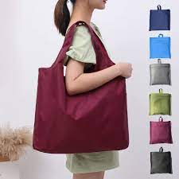

Tas Belanja Kain
Tas belanja kain ini terbuat dari bahan kanvas tebal berkualitas tinggi yang kuat, tahan lama, dan dapat digunakan berulang kali. Desainnya sederhana namun elegan, cocok untuk digunakan saat berbelanja di pasar, supermarket, atau bahkan untuk membawa barang sehari-hari. Dengan ukuran yang luas dan kuat menahan beban berat, tas ini menjadi alternatif terbaik pengganti kantong plastik sekali pakai. Dilengkapi dengan tali pegangan yang nyaman di tangan, serta mudah dilipat dan disimpan setelah digunakan. Cocok untuk kamu yang ingin berbelanja dengan gaya sekaligus peduli pada lingkungan! 🌎
Harga: Rp25.000
Checkout Sekarang